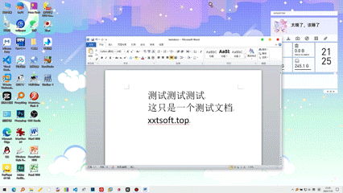
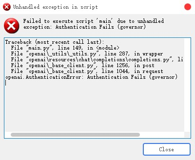

看标题就知道wmc发力了（？
这个项目我很早之前就做了，只是一直懒得发，Python萌新的拙作，大佬轻喷~
有时候自己写代码挺孤独的，或者有什么不开心的事没人倾诉，正好可以整个AI给我提供点情绪价值（？或者有时候几千几万字的接口文档懒得啃，可以直接喂给AI然后总结
于是我拿py整了个十分抽象的程序
Office文件读取使用textract，之前介绍过，PDF读取基于pdfplumber，网页读取用的requests，用户界面win11toast+Tkinter
这个AI的人设是我在maimai中最喜欢的人物————纱露朵（ソルト），目前可以通过Windows通知进行对话，这样也不占地方
演示
警告：若要退出程序，请使用/quit命令或者点击“关闭会话”，不要将弹窗收回控制中心，否则可能导致聊天记录存档失败
基础对话
很明显，这玩意已经被我调教坏了，自己拿到手后改下prompt吧
（我这里剪了一下，DeepSeek反应比较迟钝）
/web 指令
用requests库爬取指定网页，这比AI在那里瞎几把搜索好多了，注意要在/web 后输入完整URL，包括协议头（例如输入https://xxtsoft.top而不是xxtsoft.top）否则会出问题
点击“回复”按钮，可以继续和AI对话；点击查看按钮，会弹出信息框显示模型的具体回答内容
/file 指令
让纱露朵读入文件，会打开tk文件选择框，在/file 后面加上你要说的话，目前支持纯文本内容（比如txt，py，cpp等）Office文档（docx，xlsx，pptx）PDF，具体请见textract那篇文章，目前只能读取文本内容，总不可能搞个ocr吧
/cmd 指令
若加上/cmd 前缀，你的信息完全不会发送给AI，而是直接作为命令执行，和用CMD执行没有区别。例如输入“/cmd taskmgr”，立即打开任务管理器
@bat 指令
由AI将您的指令翻译为CMD指令，例如输入“@bat 帮我打开注册表”，AI生成指令“regedit”，此时您可以选择是否执行此指令
/set 指令
/quit 指令
输入后存档聊天记录，然后关闭程序
特色功能
修改聊天记录
可以随意修改纱露朵的“记忆”————只需要修改context.json，这样就可以删除误导性的内容以确保生成结果的准确性，并且也可以节省Token（如果你真打算和这个AI聊一段时间，64k估计不够用）
特有的功能
鉴于ソルト的特殊属性，我整了个知识库（虽然是网上抄的，而且直接当prompt导入），经过训练后可以回答一些问题，比如这样
{
"role": "user",
"content": "你知道maimai里面定数15的两首歌分别是什么吗"
},
{
"role": "assistant",
"content": "当然知道啦！是PANDORA PARADOXXX和系ぎて的白谱哦~"
},
使用方法
我打包了个exe，没测试，不知道能不能用，反正代码可以跑。自己注册一个DeepSeek APIKey，填入apikey.ini（这一步很重要，不填APIkey就用不了，API也不贵，像我这种人20块钱够用一年了）

如果不填或者填错就会这样↓
注意事项
DeepSeek的错觉相当离谱，包括和她对话也有明显的角色扮演痕迹，要么prompt写严点，要么Temperature调低点（我也不知道调Temperature能不能解决问题）
DeepSeek就算用API审查也相当严，如果你有那方面需求，建议换个模型
下载
妈的这辈子第一次写这么长的html，手都酸了
这东西纯屎 不放Github了